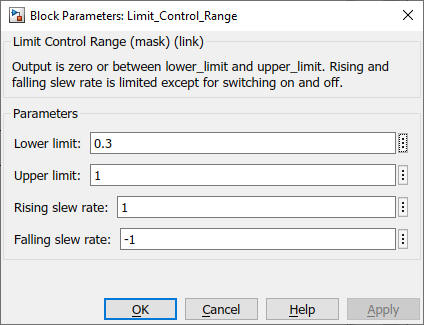

Limit_Control_Range
Path: CARNOT/Control
Purpose:
Limit a control signal to a lower limit, an upper limit, a rising and a
falling slope.
Description:
The block limits an incomming signal :
An input signal level of zero is set to zero at the output.
An input signal level above zero and below the lower limit is set to the lower
limit at the output.
An input signal above the upper limit is set to the upper limit at the output.
If the input signal change is below or above the slope limits the change of the
output signal is limited to the slope. The exception is a change to zero :
In this case the signal change is interpreted as an emergency stop and the
output is set to zero at the same time.
Input:
| ctrl | : | control signal input |
Output:
| Ctrl | : | control signal output |
Parameters and Dialog Box:

Examples:
Open the example explorer from the Matlab command window
ExampleBrowser
or load the examples via the CARNOT library.
Characteristics:
| Direct Feedthrough | : | Yes |
| Sample Time | : | Inherited from driving block |
| Vectorized | : | No |